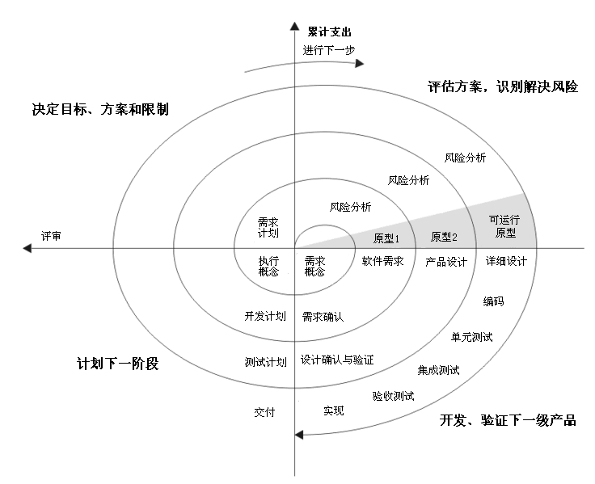
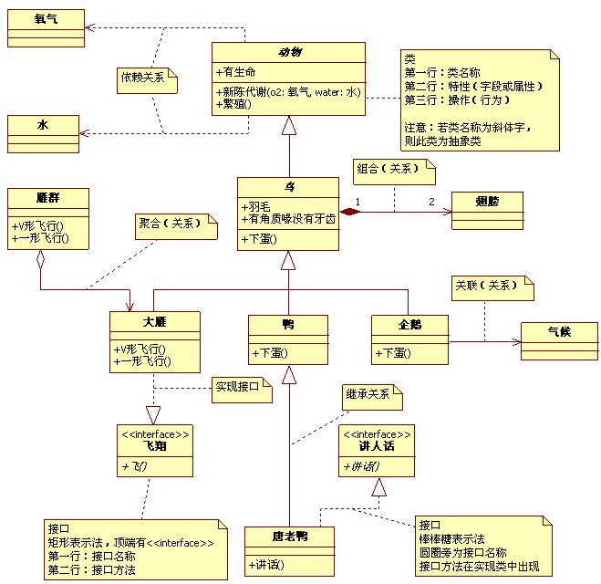

软件工程
本文最后更新于：February 27, 2023 pm
软件工程
概论
软件的定义
软件定义: 软件 = 程序 + 数据 + 文档
- 程序: 按事先设计的功能和性能需求执行的指令序列
- 数据: 是程序能正常操纵信息的数据结构
- 文档: 与程序开发、维护和使用有关的图文材料
文档的作用
- 提高软件开发过程的能见度；
- 记录开发过程的有关信息，便于使用与维护；
- 提高开发效率；
- 作为开发人员阶段工作成果和结束标志；
- 提供软件运行、维护、培训有关资料；
- 便于用户了解软件功能和性能；
软件的特点
软件是逻辑的，而不是物理的，其特点如下:
- 软件是开发的或者是工程化的，并不是制造的
- 软件开发环境对产品影响较大
- 软件开发时间和工作量难以估计
- 软件会多次修改
- 软件的开发进度几何没有客观衡量标准
- 软件测试困难
- 软件不会磨损和老化
- 软件维护易产生新的问题
- 软件生产是简单的拷贝
软件的双重作用
软件的双重作用是指软件具有两种角色，软件即是一种产品，也是开发其他软件产品的工具
- 作为产品，软件扮演着信息转换的角色，产生、管理、查询、修改、显示、传递信息。如应用软件(office)等
- 作为产品生产的载体，软件提供了计算机控制、信息通信以及应用程序开发和控制的基础平台。如操作系统(Windows)、软件开发工具(IDE)等
软件危机
软件危机的定义: 是指在软体开发及维护的过程中所遇到的一系列严重问题，比如软件开发周期长、软件开发成本高、软件质量差、软件维护难
软件危机的具体表现为:
- 开发成本和进度估计不准，开发进度难以控制(开发难)
- 软件开发生产率滞后于硬件和计算机应用普及(周期长)
- 软件成本逐年上升(成本高)
- 用户对已完成的软件系统不满意(质量差)
- 软件质量和可靠性差强人意(质量差)
- 软件常常是不可维护的(维护难)
- 软件通常没有适当的文档资料(维护难、使用难)
软件工程
软件工程是为了应对软件危机在实践中总结出来的开发软件的成功技术和方法。其认为软件开发不是某种个体劳动的神秘技巧，而应该是一种组织良好、管理严密、各类人员协同配合、共同完成的工程项目。
定义
软件工程的定义: 将系统化的、科学化的、可量化的方法应用于软件的开发、运行和维护，即针对软件的工程应用以及对上述方法的研究。
目标
软件工程的目标是在给定的时间和预算内，按照用户的需求，开发易修改、高效、可靠、可维护、适应力强、可移动、可重用的软件。
原则
- 使用阶段性生命周期计划的管理
- 进行连续的验证
- 保证严格的产品控制
- 使用现代编程工具/工程实践
- 保持清晰的责任分配
- 用更好更少的人
- 保持过程改进
对软件工程的误解
- Question: 如果项目进度落后了，可以加入更多的程序员来赶进度？
Answer: 软件开发的机制和手工作业不一样。在一个延迟了的软件项目中加入新的开发人员只会让它延迟更多 - Question: 如果我们将软件项目外包给第三方，我们就轻松了，让那个公司去完成它吧
Answer: 如果组织管理方不懂得如何从内部管理和控制软件项目，即使将项目外包也无济于事 - Question: 对目标的一般陈述就足以开始编程，我们可以今后再补充细节
Answer: 前期糟糕的项目需求定义，是导致软件失败的主要原因。项目需求的确在不断变化,但变化所产生的影响是根据变化提出的时间不同而不同的 - Question: 一旦我们编程完毕并成功运行，我们的工作就结束了
Answer: 越早开始写代码，我们就会花费越长的时间去完成它。工业数据显示，软件开发60%-80%的精力将耗费在软件首次提交给用户以后 - Question: 当我的程序运行之前，我没有办法评估它的质量
Answer: 一个最有效的软件质量保证机制应当在项目的正式开始启动时——可以通过技术报告体现 - Question: 唯一可交付的工作成果是一个成功运行的项目程序
Answer: 一个可运行的程序只是软件结构的一部分，它还包含了许多其它因素比如开发文档、使用文档等 - Question: 软件工程将会让我们去创建大量不必要的文档，并且总是使我们的进度放慢。软件工程仅仅是文档而已
Answer: 所有的文档都是提高团队沟通和质量所必须的
软件过程
由软件工程出现的原因可以知道:
- 软件工程的中心: 质量
实现软件工程的三要素:
- 过程
- 方法
- 工具
本章节即详细讲述软件工程的要素之一: 过程
软件过程的概念
软件过程是指开发和维护软件及其相关产品所涉及的一系列活动
术语解读:
- 任务: 将输入转化为输出的操作
- 活动: 一系列任务的集合
- 过程: 不同的活动按一定顺序排列的集合
基本软件过程
软件过程多样，但所有过程都具有以下共同活动:
- 沟通: 包括软件设计者与客户沟通，客户提出要求，软件设计者收集材料，以及其它相关活动
- 计划: 软件开发小组讨论使用何种方法及何种工具来实现客户需求
- 建模: 软件开发小组根据需求讨论选择何种模型来满足需求
- 构造: 编码和测试
- 部署: 软件交付给客户，客户给出建议和反馈，软件实施小组改进软件
一个典型的基本软件过程:
graph LR
RA("需求分析")-->SD("软件设计")
SD-->SC("软件编码")
SC-->ST("软件测试")
- 需求分析: 解决现实世界某个问题的软件产品及其约束的描述，要求输出编制软件需求说明书或初步的系统用户手册
- 软件设计: 分为概要设计和详细设计两个活动，要求输出概要设计说明书与详细设计说明书
- 概要设计: 把各项需求转换成软件的体系结构，结构中每个部分都是一个模块，每个模块都与某些需求相对应
- 详细设计: 对每个模块要完成的工作进行具体描述，为源程序编写打下基础
- 软件编码: 将软件设计转换成结构良好、清晰易读，且与设计相一致的计算机可以运行的程序代码，要求提交源程序清单与可执行程序模块
- 软件测试: 通过测试来判断一个软件是否满足规定的功能和性能要求，发现软件所存在的问题，避免出现缺陷导致事故，分为单元测试和组装测试，要求提交软件评测报告
- 单元测试: 检测各模块在功能和结构上存在的问题并加以纠正
- 组装测试: 将已测试通过的模块按一定顺序组装起来，按规定的各项需求，逐项进行有效性测试，决定已开发的软件是否合格，能否交付给用户使用
软件过程模型
定义: 是软件开发全部过程、活动和任务的结构框架。它能直观表达软件开发全过程，明确规定要完成的主要活动、任务和开发策略。
常见过程模型主要为3类:
- 瀑布模型:
- 演化模型
- 增量过程模型
瀑布模型
瀑布模型的开发过程与软件生命周期是一致的，也称经典的生命周期模型。其规定了各项软件工程活动，以及它们自上而下，相互衔接的固定次序，如同瀑布流水，逐级下落。
瀑布模型的特点:
- 阶段间具有顺序性和依赖性，过程透明性高，过程可管理性高
- 推迟实现的观点: 软件实现前必须进行系统分析和设计工作
- 质量保证的观点
- 每个阶段必须完成规定的文档，没有交出合格的文档就是没有完成该阶段的任务；
- 每个阶段结束前都要对所完成的文档进行评审，以便尽早发现问题，改正错误；
瀑布模型的缺点:
- 不够灵活(需求不明确时难以调整)
- 整体性太强(风险高)
- 严格的文档驱动，比较繁琐
瀑布模型适用的场景: 系统需求明确、技术成熟、工程管理较严格
演化模型
由于准确的需求很难一次获得、软件很难一次开发成功的事实，瀑布模型并不能适用于大部分场景，因此产生了演化模型。
演化模型的基本思想为: 倡导多次迭代开发，前期得到实验性的原型产品，探索可行性，理清需求，后期再前期基础上优化完善得到满意的产品
演化模型中可将常见的分为3类:
- 快速原型模型
- 并行开发模型
- 基于构件模型
本节以快速原型模型作为主要内容进行介绍。
快速原型模型作为演化模型的一种，其生命周期与瀑布模型自然有所不同，由于演化模型的思想在于多次迭代开发，因此快速原型模型的生命周期是一个循环周期，由某种条件控制循环的结束。
快速原型模型的优点:
- 强调用户参与和决策，强化了用户与开发人员的沟通
- 可加快需求的确定，能够处理需求的不确定性和风险
- 简化了项目管理、缩短了开发时间、降低了风险和开发成本
快速原型模型的缺点:
- 不适用于开发大型系统
- 软件可维护性差
- 用户合作要求高，如果合作不好，反而会拖延开发进度
快速原型模型适用的场景:
- 客户或领域专家不熟悉电脑/软件
- 需求、技术不明确
- 软件人员不熟悉领域,沟通理解困难
增量过程模型
增量过程模型是一种非整体开发的模型、进化式的开发过程，其允许从部分需求定义出发，先建立一个不完整的系统，通过测试运行取得经验和反馈，然后进一步扩充和完善该系统。反复进行，直至软件人员和用户满意为止。
演化模型与增量过程模型的异同:
演化模型和增量过程模型都是进行多次开发，而瀑布模型是一次开发即可完成系统，但演化模型与增量过程模型不同之处在于演化模型根据原型每次的开发结果是一个整系统，而增量过程模型的阶段开发结果可以是不完整系统。
本节通过增量模型和螺旋模型来对增量过程模型进行介绍。
增量模型
增量模型结合了原型模型的基本要素和迭代的特征，采用了基于时间的线性序列，每个确定线性序列都会输出该软件的一个增量，每个增量都是小而可用的软件
增量模型的特点:
- 在前面增量的基础上开发后面的增量
- 每个增量的开发可用瀑布或快速原型模型
- 迭代的思路
增量模型的优点:
- 引入增量包概念，不需要提供完整的需求。只要有一个增量包出现，开发就可以进行
- 在项目的初始阶段不需要投入太多的人力资源
- 增量可以有效地管理技术风险，降低系统失败风险
- 有利于增加客户信心，提高系统可靠性、可维护性和稳定性
增量模型的缺点:
- 增量粒度难以选择，因为每个增量必须提供一些系统功能
- 确定所有的基本业务比较困难
增量模型适用的场景:
- 需求比较明确
- 架构比较稳定，每次增量不影响架构
螺旋模型
螺旋模型结合了瀑布模型和原型模型的特点，并且强调风险管理

螺旋模型沿着螺线旋转，在笛卡尔坐标的四个象限上分别表达了四个方面的活动:
- 制定计划: 确定软件目标，选定实施方案，弄清项目开发的限制条件
- 风险分析: 分析所选方案风险，考虑如何识别和消除风险
- 实施工程: 实施软件开发
- 客户评估: 评价开发工作，提出修正建议
螺旋模型的优点:
- 支持用户需求的动态变化
- 原型可看作可执行的需求规格说明书
- 强调原型的可扩充性和可修改性
- 为项目管理人员及时调整管理决策提供了方便，进而可降低开发风险
螺旋模型的缺点:
- 如果每次迭代的效率不高，致使迭代次数过多，将会增加成本并推迟提交时间
- 要求开发队伍水平较高
螺旋模型适用的场景:
- 需求不明确
- 大规模软件开发
- 高风险项目
四种模型总结
增量模型和螺旋模型的异同点
- 相同
- 都是非整体的迭代式的开发方式
- 不同
- 两者迭代的层级不同
- 增量：活动级的迭代
- 螺旋：过程级的迭代
- 需求分析时间不同
- 增量：先做总体需求分析和设计，在编码和测试逐个的增量包开发
- 螺旋：开发周期内采用瀑布模型
- 交互软件的不同
- 增量：每次增量开发都在上一次增量的基础上提交新的一部分的软件
- 螺旋：每次迭代都提交一个新的完整的软件版本
- 减少风险的方式不同
- 增量：避免使用未成熟技术，和经常的客户反馈减少风险
- 螺旋：直接引入风险分析
- 两者迭代的层级不同
软件过程成熟度模型(Capatility Maturity Model)
软件过程成熟度模型是软件行业标准模型，用来定义和评价软件企业开发过程的成熟度，提供如何做才能提高软件质量的指导。
该模型可以说明一个特定的软件过程被显示地定义、管理、度量、控制和执行的程度，可用于指示企业加强其软件过程能力的潜力
CMM分为5个层级，分别为:
- 初始级: 有能力的人和个人英雄主义
- 可重复级: 基本项目管理
- 已定义级: 过程标准化
- 量化管理级: 量化管理
- 优化级: 持续的过程改进
过程与产品关系
软件开发中有两种倾向:
- 以产品为中心，主要关心最终产品
- 以过程为中心，强调软件过程的重要性(软件工程强调该倾向)
一般来说，软件过程决定了软件产品的质量，不同的项目需要不同的过程模型或模型的组合。
需求分析
需求的定义
- 软件需求表达了对解决现实世界中某类问题的产品的要求和约束
- 确定系统必须具有的功能和性能，系统要求的运行环境，并且预测系统发展的前景
- 需求就是以一种清晰、简洁、一致且无二义性的方式，对一个待开发系统中各个有意义方面的陈述的一个集合
需求的特性
- 可验证性: 需求是测试的依据，因此需求必须具有可以被验证的性质
- 可量化性: 需求的表述应该是量化的，如"软件应该对用户是友好的"即是不可量化的表述，而"在任何营业时间内出现一个致命错误的可能性低于"则是量化的表述
- 优先级: 需求应当根据紧迫程度和现有资源确定优先级
需求的分类
需求可以分为功能性需求和非功能性需求两种
- 功能性需求: 描述系统应该做什么，即为用户和其它系统完成的功能、提供的服务，如输入、输出、计算、数据存储等
- 非功能性需求: 指解决问题时的约束，按约束类型不同可以细分为: 可靠性需求、可用性需求、性能需求、可维护性需求
- 可靠性: 如"机场雷达系统一个月内不能出现2次以上故障"
- 可用性: 如"系统出错后可以允许的最大恢复时间"
- 性能: 如"应力分析程序必须在一分种内生成任何一个梁的应力报告"
- 可维护性: 如"有健全程序的文档"
需求分析过程
完整的需求分析过程分为4个步骤:
- 需求获取: 收集需求
- 需求分析(也名需求提炼): 根据需求产生操作规格参数表，指明与其他系统元件的软件接口，确定软件必须遵循的约束
- 需求描述(也名需求定义): 撰写需求规格说明书
- 需求验证: 检查需求的正确性、完整性、非二义性、内部和外部的连贯性
需求获取
需求获取的任务
- 发现和分析问题，并分析问题的原因/结果关系
- 与用户进行各种方式的交流，并使用调查研究方法收集信息
- 按照三个成分(即数据、过程和接口)观察问题的不同侧面
- 将获取的需求文档化(用例、决策表、决策树)
需求获取的方法
- 采访: 获取需求的传统手段
- 设定情景: 通过用例图来设置情景从而获得需求
- 原型: 通过原型来表示不明确的需求，可将原型视为可执行的需求说明书
- 会议: 通过讨论提出更多更全面的多角度需求
需求分析
定义: 对应用问题及环境的理解和分析，为问题涉及的信息、功能及系统行为建立模型，将用户需求精确化、完全化
需求分析采用多种形式描述需求，通过建立需求的多种视图，揭示出一些更深的问题，并且需要产生操作规格参数表，指明与其他系统元件的软件接口，确定软件必须遵循的约束
需求分析的方法
主要有2种方法:
- 结构化分析模型
- 面向对象分析模型
这两种方法是需求分析中最需要掌握的模型！
结构化分析模型
结构化分析可以分析商业的需求，再转换为规格文件，最后再产生电脑软件、硬件配置及相关的手册及程序。
结构化思维是软件工程学科中一种典型的分析系统、设计系统的思维方法，采用系统科学思想、依据层次分解、 自顶向下分析和设计系统
该模型以数据字典为核心，通过分别进行功能建模、数据建模和行为建模从而对需求进行分析。
-
功能建模: 通过多层数据流图来反应系统的数据流通情况
首先说明数据流图的基本图形符号:
其中多个数据流之间的代表要求同时出现多个输入或输出，代表必须且只能出现一个输入或输出
结构化分析策略是自顶向下逐步求精，因此数据流图有多层结构:
- 顶层数据流图(0层数据流图/环境图): 仅包括一个数据处理过程，也就是要开发的目标系统，其作用在于用是确定系统在其环境中的位置，通过确定系统的输入和输出与外部实体的关系确定其边界
2. 下层数据流图(1层、2层···): 对系统中不同功能模块的具体数据流方向进行描述，描述方法与顶层数据流相同 -
数据建模: 在结构化分析方法中，使用实体—关系建模技术来建立数据模型，通过实体—关系图进行可视化
实体—关系图仅包含3种相互关联的元素: 数据对象(实体)、描述数据对象的属性及数据对象(实体)彼此间相互连接的关系-
数据对象(实体): 可以是外部实体、事物、角色、行为或事件、组织单位、地点或结构等
-
属性: 数据对象的特征，在ER图中用椭圆或圆角矩形表示，并用无向边将属性与相关的数据对象连接在一起
-
关系: 说明两个实体之间的关系，在ER图上用无向边表示，同时在无向边的两端应标识出关联实例的数量，也称为关联的重数
关系本身也可能有属性，这在多对多的关系中尤其常见，在表示关系的无向边上再加一个菱形框，并在菱形框中标明关系的名字
-
-
行为建模: 行为建模通过描绘系统的状态及引起系统状态转换的事件，来表示系统的行为，通过状态转换图来可视化
- 状态: 状态是任何可以被观察到的系统行为模式，一个状态代表系统的一种行为模式，状态规定了系统对事件的响应方式，状态可能有: 初态(初始状态)、终态(最终状态)和中间态三种可选值，在一张状态图中只能有一个初态，而终态则可以有多个，也可以没有
- 事件: 事件是在某个特定时刻发生的事情，它是对引起系统做动作或从一个状态转换到另一个状态的外部事件的抽象
事件表达式: 事件说明(守卫条件)/动作表达式
- 事件说明: 事件名(参数表)
- 守卫条件: 布尔表达式(如果同时使用守卫条件和事件说明，则当且仅当事件发生且布尔表达式成立时，状态转换才发生。如果只有守卫条件没有事件说明，则只要守卫条件为真，状态转换就发生)
- 动作表达式: 是一个过程表达式，当状态转换开始时执行该表达式
面向对象分析模型
结构化分析方法的基本点是面向过程，系统被分解成若干个过程。而面向对象的方法是采用构造模型的观点，在系统的开发过程中，各个步骤的共同的目标是建造一个问题域的模型。在面向对象的设计中，初始元素是对象，然后将具有共同特征的对象归纳成类，组织类之间的等级关系，构造类库。在应用时，在类库中选择相应的类
面向对象的建模语言很多，目前使用最广泛的是统一建模语言(Unified Modeling Language, UML)，本节也以UML作为面向对象分析的基本模型
- 事物(Things): UML模型中最基本的构成元素，是具有代表性的成分的抽象
- 关系(Relationships): 关系把事物紧密联系在一起
- 图(Diagrams): 是事物和关系的可视化表示
对于简单的系统，可以将OOA(Object-Oriented Analysis)划分为三个模型:
-
用例模型: 是对功能进行建模得到的功能模型，对应图为用例图
-
对象模型: 用类和对象表示的静态模型，对应图为类图
-
动态模型: 表示交互行为的交互模型，对应图为状态图和交互图
-
用例模型: 在UML中，用例模型通过若干个用例图来进行描述
用例图: 主要元素为用例、参与者、用例与参与者之间的关系
建立用例模型的过程:- 确定业务参与者
- 确定业务用例
- 标识关系
- 书写用例规格说明
-
用例: 系统执行的一系列动作(可以理解为系统的一个功能)，动作结果能被参与者察觉到
-
参与者: 与系统交互的人或物，它代表外部实体
-
关系: 包括三种关系:
- 用例与参与者的关系: 关联关系
- 用例与用例的关系: 泛化、包含、扩展关系
- 参与者与参与者的关系: 泛化关系
- 关联关系: 表示参与者与用例之间的通信，使用无箭头的实线表示
- 泛化关系: 即继承关系，父类为父用例，子类为子用例，使用箭头指向父用例的实线表示
- 包含关系: 复杂用例与其分解出的小用例的关系，使用箭头指向被包含用例的虚线表示
- 扩展关系: 是用例功能的延伸，相当于为基础用例提供一个附加功能，使用箭头指向基础用例的虚线表示
- 对象模型: 对象建模的主要任务是建立问题域的概念模型，这个模型描述了现实世界中的"类与对象"以及它们之间的关系，而非实际的软件类或实际构件
对象模型共有5个层次:- 主题层
- 类-对象层
- 结构层
- 属性层
- 服务层
上述5个层次对应着建立对象模型的5项主要活动: 识别主题、确定类与对象、定义关联、定义属性、定义服务。在实际建模中，这5项工作完全没有必要顺序完成，也无需彻底完成一项工作后再开始另外一项工作
- 识别主题: 在开发大型、复杂系统的过程中，为了降低复杂程度，人们习惯于把系统再进一步划分成几个不同的主题，在UML中主题可以采用"包"来展现，对于很小的系统，可能根本无需引入主题层
- 确定类与对象: 类与对象是对问题域中有意义的事物的抽象，它们既可能是可见的物理实体，也可能是抽象的概念，因此首先列出候选的类与对象，再进行筛选、分类得到类与对象
- 定义关联: 确定不同类与对象之间的关系(聚合、泛化、依赖、实现、组合等)
- 定义属性: 确定每个类与对象应具有的属性
- 定义服务: 确定每个类与对象应提供的方法

- 动态模型: 动态模型着重于系统的控制逻辑，考察在任何时候对象及其关系的改变，描述这些涉及时序和改变的状态
在UML中动态模型的描述工具有交互图(包括顺序图、协作图)和状态图-
交互图: 是用例的具体实现，其实现是以对象和对象间协作为基础的
- 顺序图: 对象下面的垂直虚线是对象的生命线，对象间的通信用对象生命线之间的水平消息线表示
- 协作图: 协作图又称通信图，是顺序图的另一种表视图，以图或网格格式描述对象交互，其中对象可以置于图中任何位置
-
状态图: 描述一个特定对象的所有可能的状态以及引起状态转换的事件，面向对象模型的状态图与结构化分析模型中行为建模形成的状态图相同
-
需求描述
软件需求规格说明书(SRS)是对待开发系统的行为的完整描述，包含了描述用户与软件交互的用例的集合。用例通常描述功能性需求，除了用例之外，SRS还包含非功能性需求
需求分析工作完成的一个基本标志是形成了一份完整的、规范的需求规格说明书，其中需求描述步骤即是根据需求分析出的模型来撰写需求规格说明书的过程。
需求规格说明的特征
- 应该只具有固定的、已知的和同意交付的系统的基本特征
- 应该包含交付什么
- 应该使用客户能理解的词汇
- 应该是正确的
- 应该是准确的
- 应该是明确的
- 应该是完整的
- 应该是可验证的
- 应该是能确认的
- 应该是一致的
- 应该是可更改的
- 应该是可以追踪的
需求规格说明的原则
- 从现实中分离功能(描述要"做什么"而不是"怎样实现")
- 要求使用面向处理的规格说明语言
- 如果被开发软件只是一个大系统中的一个元素，那么整个大系统也包括在规格说明的描述之中
- 规格说明必须包括系统运行环境
- 规格说明必须是一个认识模型
- 规格说明必须是可操作的
- 规格说明必须容许不完备性并允许扩充
- 规格说明必须局部化和松散耦合
需求规格说明的内容
- 功能性需求(核心部分)
- 非功能性需求(功能约束)
- 环境描述和系统目标
- 项目管理
- 生命周期需求
- 系统交付和安装说明
- 数据和传输协议需求
IEEE 830为软件需求说明书定义了一种格式，仅作为参考
GB/T 8567-2006为中国《计算机软件文档编制规范》标准，其中涉及需求规格说明文档
需求验证
定义: 需求验证即检查需求的正确性、完整性、非二义性、内部和外部的连贯性。
需求文档需要验证，以表明它真实地定义了客户想要的系统，因此需求通常是同时从客户和开发人员的角度来进行检查的
- 客户角度:
- 有效性检查: 检查不同用户使用不同功能的有效性
- 一致性检查: 在文档中，需求不应该冲突
- 完备性检查: 需求文档应该包括所有用户想要的功能和约束
- 现实性检查: 检查保证能利用现有技术实现需求
- 开发人员角度:
- 可验证性: 需求可被验证的能力
- 可理解性: 需求被理解的能力
- 可追踪性: 有关每一个元件存在原因的说明(需求不变的概率)
- 适应性(修改性): 文档可被修改的程度
需求验证的方法
- 利用原型检验系统是否符合用户的真正需要
- 对每个需求编写概念性的测试用例
- 编写用户手册
- 自动的一致性分析: 可用CASE工具检验需求模型的一致性
软件设计
软件设计的定义: 根据需求分析结果，生成如何构造软件的相关技术文档和模型的过程，其告诉了软件构造者具体的构造方法，即软件的架构、构件、接口和其他特性的定义过程及该过程的结果
软件设计的方法主要有:
- 结构化设计
- 面向对象的设计
软件设计的活动
软件设计包含以下两类活动:
- 概要设计: 描述软件的顶层架构和组织，划分不同的组件，将软件需求转化为数据结构和软件的系统结构，需要完成数据设计、体系结构设计和接口设计
- 详细设计: 详细描述各组件以便能够编码实现，需要完成组件设计
由软件设计的活动来看，软件设计是一种分解设计，通过概要设计将软件划分为不同的组件模块，再通过详细设计对每个组件模块进行详细说明，因此创新设计不属于软件设计过程，而是属于需求分析过程
软件质量
软件设计的目的是得到具有高质量的软件，因此软件质量的评估十分重要，而软件质量可以通过质量属性来描述
- 功能性
- 易用性
- 可靠性
- 性能
- 可支持性:
- 扩展性
- 适应性
- 可维护性
软件设计技术
共有7种技术需要理解和掌握:
- 抽象
- 细化
- 设计模式
- 模块化
- 信息隐藏
- 功能独立
- 重构
抽象
定义: 发现实物本质特征和方法的过程
抽象方式: 参数化和规范化
抽象需要将过程抽象、数据抽象、控制抽象
细化
定义: 逐步求精的过程
细化与抽象是对应关系，抽象将实体提取出概念，不关注细节，而细化需要对抽象出的概念进行细化分析来描述细节，在设计时更关注抽象，在实现时更注重细化
设计模式
定义: 是对软件设计中普遍存在(反复出现)的各种问题，所提出的解决方案
《设计模式：可复用面向对象软件的基础》中提出了23种设计模式，这23种设计模式可以分为三类:
- 创建型模式
- 结构型模式
- 行为型模式

模块化
定义: 软件被划分为命名和功能相对独立的多个组件(通常称为模块)，通过这些组件的集成来满足问题的需求
但是模块化不能无限划分模块！
因为随着模块数增加，单个模块的规模减小了，但是模块之间的关系复杂程度会增加，设计模块间接口的工作量也将增大
模块化设计标准(模块化评价指标)如下:
- 模块化分解性: 一个设计方法提供了分解成子问题的系统机制
- 模块化组合性: 一个设计方法能够使现有的(可重用的)组件组装成新系统
- 模块化可理解性: 一个模块可以作为一个独立单元使用
- 模块化连续性: 系统需求的小变化只引起单个模块变化，而不是整个系统范围内的改变
- 模块化保护: 模块内的异常情况只影响自身模块
信息隐藏
信息隐藏原则: 模块应该具有彼此相互隐藏的特性(模块定义和设计时应当保证模块内的信息(过程和数据)不可以被不需要这些信息的其他模块访问)
意义:
- 信息隐藏意味着有效的模块划分可以通过定义一些相对独立的模块来实现
- 信息隐藏原则定义和隐藏了模块内的过程细节和模块内的本地数据结构
功能独立
定义: 每个模块只解决了需求中特定的子功能并从程序结构的其他部分看该模块具有简单的接口
衡量标准: 内聚性和耦合性
重构
定义: 不改变组件功能和行为条件下简化组件设计(或代码)的一种重组技术
重构时往往检查现有设计的冗余情况、未使用的设计元素、无效或不必要的算法、较差的构建方式或不恰当的数据结构，或任何其他可更改并导致更好设计的错误
数据设计
数据设计构建高层抽象(客户/用户的数据视图)的数据模型、信息模型，数据设计在不同层级上有不同的设计方案:
- 程序组件层面: 具体的程序需要使用一定的数据结构来对数据进行建模
- 程序应用层面: 应用层面需要使用数据库对数据模型进行描述
- 业务层面: 不同数据库的信息进行收集并重组成数据仓库可以实现数据挖掘、知识发现
体系结构设计
体系结构设计是指系统的一个或者多个结构，结构中包括软件的构件、构件的外部可见属性以及它们之间的相互关系，外部可见属性是指软件构件提供的服务、性能、使用特性、错误处理、共享资源使用等
体系结构设计有多种分类方式，其中最常见的有根据数据进行分类的、根据设备进行分类的
根据数据分类的架构
主要有5类:
- 数据中心架构
- 数据流架构
- 调用和返回架构
- 面向对象架构
- 层次架构
数据中心架构
数据中心架构是以数据存储为整个系统的核心，其他组件对数据存储进行访问从而实现系统功能，其中各客户端操作的数据相互独立

数据流架构
适用于输入数据通过计算或组件转换为一系列输出数据，可分为管道和过滤器模式、批处理序列模式两类:
- 管道和过滤器模式: 管道和过滤器模式强调数据的连续组件的增量转换。在这种方法中，数据流由数据驱动，整个系统被分解为数据源，过滤器，管道和数据接收器的组件
- 过滤器: 过滤器转换输入数据流的数据，对其进行处理，并通过管道将变换的数据流写入下一个过滤器进行处理，它以增量模式工作，一旦数据通过连接的管道到达，它将开始工作
- 有源滤波器: 有源滤波器使连接的管道将数据拉入并推出已转换的数据
- 被动滤波器: 无源滤波器使连接的管道将数据推入并拉出数据
- 批处理序列模式: 批次顺序是一种经典的数据处理模型，其中数据转换子系统只有在其先前的子系统完全通过之后才能启动其进程
调用和返回架构
调用和返回框架是将系统分为多个层次，其中上层模块调用下层模块，不同层模块存在主从关系
这里说明几个概念:
- 程序结构的深度: 程序结构的层次数称为结构的深度
- 程序结构的宽度: 层次结构中同一层模块的最大模块个数称为结构的宽度
- 扇入数: 一个模块被其他模块调用的次数
- 扇出数: 一个模块调用其他模块的次数
如上图所示: 该程序的深度为5、宽度为7、M的扇入数为1、扇出数为4
面向对象架构
构件是对象，对象是抽象数据类型的实例。在抽象数据类型中，数据的表示和它们的相应操作被封装起来，对象的行为体现在其接受和请求的动作。连接件即是对象间交互的方式，对象是通过函数和过程的调用来交互的
- 完整性: 每个对象独立负责维护其本身的完整性，比主程序子程序的紧耦合方式，更容易实现应用体完整性。
- 隐蔽性: 对象的表示对其他对象而言是隐蔽的，对象可以不影响它的客户就能改变其实现方法。
层次架构
每一层为上层提供服务，并作为下一层的客户，每一层至多和相邻的上下层交互，因此功能的改变最多影响相邻的内外层，因此允许每层用不同的方法实现，为软件复用提供了强大的支持
根据设备分类的架构
可以分为集中式架构和分布式架构:
- 集中式架构: 单一主机作为服务提供机器
- 分布式架构:
- 多处理器架构
- C/S和B/S架构
- 分布式对象架构
- 代理
C/S架构
在C/S(Client/Server)架构中，客户机可以通过远程调用来获取服务器提供的服务
其中客户机可能有两种形态:
- 瘦客户机模型：在瘦客户机模型中，数据管理部分和应用逻辑都在服务器上执行，客户机只负责表示部分
- 胖客户机模型: 服务器只负责对数据的管理，客户机上的软件实现应用逻辑和与系统用户的交互
表示层: 表示层是应用系统的用户界面部分，担负着用户与应用程序之间的对话功能
应用逻辑层: 应用逻辑层为应用系统的主体部分，包含具体的业务处理逻辑
数据层: 数据层主要包括数据的存储及对数据的操作，一般选择关系型数据库管理系统
B/S架构
B/S(Browser/Server)架构，就是只安装维护一个服务器(Server)，而客户端采用浏览器(Browse)运行软件。B/S 结构应用程序相对于传统的 C/S 结构应用程序是一个非常大的进步。B/S结构的主要优点是分布性强、维护方便、开发简单且共享性强、总体拥有成本低。
缺点: 数据安全性问题、对服务器要求过高、数据传输速度慢、软件的个性化特点明显降低、难以实现传统模式下的特殊功能要求
接口设计
接口设计主要包括3个方面:
- 模块与模块之间的接口设计
- 软件与其他软硬件之间的接口设计
- 软件与人之间的接口设计
这里主要介绍软件与人之间的接口设计，其中很重要的一部分是用户界面设计
高效用户界面设计的3条重要原则:
- 用户控制系统(以用户为中心)
- 减少用户记忆
- 保存界面一致
设计用户界面应当包括以下3种分析:
- 环境分析: 确定了用户接口操作的物理结构和社会结构
- 特性分析:
- 易使用性: 包括使用简单、界面一致、拥有HELP帮助功能、快速的系统响应、具有容错能力等
- 灵活性: 考虑到用户的特点、能力和知识水平，应当使用户界面满足不同用户的要求
- 可靠性: 用户界面应能保证用户正确、可靠地使用系统，并保证有关程序和数据的安全性
- 用户分析: 研究使用软件的用户:
- 外行型: 以前从未使用过计算机系统的用户
- 初学型: 尽管对新的系统不熟悉，但对计算机还有一些使用经验的用户
- 熟练型: 对一个系统有相当多的经验，能够熟练操作的用户
- 专家型: 了解系统内部的构造，有关于系统工作机制的专业知识的用户
组件设计
定义: 接近代码层次的软件抽象描述，包括了逐渐减少软件抽象层次的一系列任务
设计方法主要有两种:
- 结构化设计: 是一种基于过程设计的理念，其限制了算法表示细节的逻辑结构数量和类型
- 面向对象设计: 以类与对象设计为基础的设计方法，需要遵循开闭原则、依赖倒置原则、Liskov替换原则、接口隔离原则、内聚性原则等原则
结构化设计模型
这里采用结构化分析模型转换为结构化软件设计模型为例进行说明！
结构化设计的模块与数据
模块结构和表示
一个软件系统通常由很多模块组成，结构化程序设计中的函数和子程序都可称为模块，它是程序语句按逻辑关系建立起来的组合体
模块可以分为4种类型:
- 传入模块
- 传出模块
- 变换模块
- 协调模块
- 树状结构: 只有一个顶层模块，上层模块调用下层模块，同一层模块之间互不调用
- 网状结构: 任意两个模块之间都可以有调用关系
数据结构和表示
数据结构是数据的各个元素之间逻辑关系的一种表示，数据结构设计应确定数据的组织、存取方式、相关程度，以及信息的不同处理方法
结构化设计中使用的数据结构即为常见的数据结构，如链表、向量、树、堆栈、图等，以及基本数据结构构建成的复杂数据结构
结构化数据设计
在结构化设计方法中，数据设计是将ER图中描述的对象和关系，以及数据字典中描述的详细数据内容转化为软件的数据结构定义(即软件涉及的文件系统的结构以及数据库的表结构)
对数据进行存储有两种方式:
- 文件存储: 适合文件存储的情况:
- 数据量较大的非结构化数据，如多媒体信息
- 数据量大，信息松散，如历史记录、档案文件等
- 非关系层次化数据，如系统配置文件
- 对数据的存取速度要求极高的情况
- 临时存放的数据
- 数据库存储: 数据库可以分为网状数据库、层次数据库、关系数据库、面向对象数据库、文档数据库、多维数据库等，目前最常用且最适合结构化设计方法的仍旧是关系型数据库
结构化架构设计
在结构化设计方法中，软件的结构元素是模块，因此通常也称为模块设计，该设计表示可以从分析模型(如数据流图)导出，这种设计方法称为基于数据流方法的设计过程
基于数据流的设计方法也称为过程驱动的设计方法，典型的数据流类型可以分为变换型和事务型
大型的软件系统通常是变换型结构和事务型结构的混合结构，一般利用以变换分析为主，事务分析为辅的方式进行软件结构设计
变换型映射方法
变换数据流所体现出的是数据从输入到加工再到输出的一般步骤
设计步骤:
- 重画数据流图: 重新描述系统中的数据是如何流动的
- 在数据流图上区分系统的逻辑输入、逻辑输出和中心变换部分
- 进行一级分解，设计系统模块结构的顶层和第一层(自顶向下)
- 进行二级分解，逐层细化，直到不能细分或模块不宜再分解
由变换数据流特性可以知道，变换型系统的结构图由输入、中心变换和输出3部分组成
事务型映射方法
通常接受一项事务，根据事务处理的特点和性质，选择分派一个适当的处理单元，然后给出结果
设计步骤:
- 识别事务源: 利用数据流图和数据词典，找出各种需要处理的事务
- 规定适当的事务型结构: 根据模块划分理论，建立适当的事务型结构
- 识别各种事务和它们定义的操作
- 利用公用模块: 不同事务的一些中间模块可以由类似的若干个下层模块组成，则可以把这些下层模块构造成公用模块
- 建立事务处理模块: 对每种事务建立一个事务处理模块(由不同公有模块和每种事务的私有模块组合)
- 对事务处理模块规定它们全部的下层操作模块
- 对操作模块规定它们的全部细节模块
由事务数据流特性可以知道，事务型系统的结构图由接受事务和事务活动2部分组成
例题
银行储蓄系统的结构化设计:
第一步: 重画数据流图
第二步: 确定数据流图具有变换特性还是事务特性——是事务型
第三步: 确定输入流和输出流的边界
第四步: 一级分解
第五步: 二级分解

直接合并得到初始架构
精化结构(调度模块合并到上级模块、调整控制范围)

提高模块独立性
结构化接口设计
课程未介绍
结构化组件设计
组件设计属于详细设计中的内容，在结构化设计方法中，组件是面向过程的，因此结构化组件设计也叫过程设计，过程设计要决定各个模块的实现算法，并使用过程描述工具精确地描述这些算法
描述工具有:
- 程序流程图
- N-S图(盒图)
- PAD图
- 伪代码
流程图
程序流程图也称为程序框图，程序流程图使用5种基本控制结构，分别是:
N-S图
N-S图也叫做盒图，其五种基本控制结构由5种图形构件表示，分别是:
PAD图
PAD也设置了5种基本控制结构的图式，并允许递归使用。分别是:
此外，PAD还具有2种扩充控制结构
伪代码
伪代码，及程序设计语言，也称PDL(Program Design Language)
PDL是一种用于描述功能模块的算法设计和加工细节的语言，称为程序设计语言，它是一种伪码
伪码的语法规则分为外语法和内语法
PDL具有严格的关键字外语法，用于定义控制结构和数据结构，同时它表示实际操作和条件的内语法时可使用自然语言的词汇。
特点:
- 为了区别关键字，规定关键字一律大写，其它单词一律小写。或者规定关键字加下划线，或者规定它们为黑体字。
- 固定的关键字外语法提供全部结构化控制结构、数据说明和模块特征
- 内语法使用自然语言来描述处理特性，内语法比较灵活，只要写清楚就可以，不必考虑语法错误，以利于人们可把主要精力放在描述算法的逻辑上。
- 有数据说明机制，包括简单的(如标量和数组)与复杂的(如链表和层次结构)的数据结构。
- 有子程序定义与调用机制，用以表达各种方式的接口说明
生产率和工作量度量
度量是一种量化衡量方法，使得人们可以理解和把握软件项目的生产效率和所需要的劳动量(工作量)
生产率度量
工作量: 一人工作一个月为单位，记为人月
生产率的度量方法:
- 基于LOC(Line Of Code)度量: 直接测量在一个特定时间内产生的代码行数(LOC)，其中LOC为可测量量
| 项目编号 | 每KLOC的错误数 | 每KLOC的缺陷数 | 每KLOC的文档页数 | 每KLOC的成本 | 每人月代码行数 |
|---|---|---|---|---|---|
| 1 | 11.6 | 1.6 | 46.5 | 16363.6 | 2750 |
| 2 | 11.1 | 1.4 | 44.5 | 11304.3 | 4600 |
| 3 | 9.5 | 1.4 | 62.3 | 10606 | 4125 |
- 基于功能点(FP)度量: 一个给定时间内生产出的功能点和目标点
其中total_count由功能数量乘以功能复杂性得到，对不同项目，功能复杂性表可能不同
其中为复杂度校正值，需回答14个问题来得到14个F的值，从而求和，其分别为:
- 系统是否需要可靠的备份和恢复？
- 是否需要数据通信？
- 是否有分布处理的功能？
- 是否性能成为关键？
- 系统是否运行在现存的高度实用化的操作环境中？
- 系统是否需要联机数据项？
- 联机数据项是否需要建立多重窗口显示和操作，以处理输入处理？
- 主文件是否联机更新？
- 输入、输出、文件、查询是否复杂？
- 内部处理过程是否复杂？
- 程序代码是否可复用？
- 设计中是否包括了转移和安装？
- 系统是否设计成可以重复安装在不同机构中?
- 系统是否设计成易修改和易使用？
| 文字描述 | 没有影响 | 偶有影响 | 轻微影响 | 平均影响 | 较大影响 | 严重影响 |
|---|---|---|---|---|---|---|
| Fi | 0 | 1 | 2 | 3 | 4 | 5 |
(1)已知该项目的复杂性调整值： ，计算该项目的功能点个数
(2)若该项目采用Pascal作为编程语言，其中Pascal实现单个功能点平均代码行数为90 LOC/FP，估算该项目的代码行数
两种度量方法比较:
| 优点 | 缺点 | |
|---|---|---|
| LOC | LOC、KLOC和相关度量容易计算 许多现有的软件估算模型都使用LOC和KLOC作为一项重要输入 有大量的关于LOC的文献和数据 |
LOC依赖于使用的语言，这对短小精悍的程序不利 软件开发初期很难估算出最终软件的代码行数 不太适用于非过程化语言 |
| FP | 与程序设计语言无关 在开发前就可以估算出软件项目的规模 | 没有直接涉及算法的复杂度，不适合算法比较复杂的软件系统 功能点计算主要靠经验公式，主观因素比较多 |
工作量度量
通过任务分解度量项目工作量
成本估算
分解技术
分解技术有2种方法:
- 基于问题分解: 将问题分为不同的子模块，然后用基于LOC或基于FP方法进行工作量度量
- 基于过程分解: 将软件开发按开发过程进行分解，对每个过程进行成本估计
经验模型
软件测试
软件测试定义:
- 在特定的条件下对系统或组件进行观察或记录结果，对系统或组件的某些方面进行评估的过程
- 分析软件各项目以检测现有的结果和应有结果之间的差异(即软件缺陷)，并评估软件各项目特征的过程
软件缺陷的条件(满足任一即为缺陷):
- 未完成: 软件未实现产品说明书要求的功能
- 有错误: 软件出现了产品说明书指明不能出现的错误
- 画蛇添足: 软件实现了产品说明书未提到的功能
- 隐含需求未实现: 软件未实现产品说明书虽未明确提及但应该实现的目标
- 不好用: 软件难以理解、不易使用、运行缓慢
测试与质量保证
软件测试人员的目标: 尽早找出软件缺陷，并确保缺陷得以修复
软件质量保证人员(Software Quality Assurance)的主要职责: 创建和执行改进软件开发过程并防止软件缺陷发生
因此，软件测试是软件开发过程中的一个环节，而质量保证则贯穿软件开发的全过程的
质量的评价标准:
- 功能性(functionality)
- 可靠性(reliability)
- 可用性(usability)
- 效率(efficiency)
- 可维护性(maintainability)
- 可移植性(portability)
软件调试与测试
软件测试的目标、基本原则和评价准则
目标
- 确认系统满足其预期的使用和用户的需要
- 确认解决了所需解决的问题
- 为测试的过程建立责任和可解释性
- 便于及早发现软件和系统的异常
- 及早提供软件和系统的性能评估
- 为管理提供真实信息，评估风险
- 鉴别出程序在功能等方面的异常集聚之处
基本原则
- 穷尽测试是不可能的: 因此测试需要选择
- 测试无法显示潜在的软件缺陷: 进行测试也不能保证没有错误
- 测试活动应尽早进行: 越早发现修改成本越低
- 软件缺陷具有群聚性: 一个问题出错导致多个错误现象出现
- 注意杀虫剂现象: 用一样的测试用例是不可取的
- 应尽量由独立的测试团队进行测试: 自我测试效率低
评价准则
- 覆盖率: ，即测试用例运行时被执行的语句比上所有语句，覆盖率越高越好
- 故障插入: 在测试前被有意地插入一些故障到程序中，发现率为被发现的故障数比上插入的故障数，发现率越高越好
- 变异分值: 程序进行两个或更多个变异，然后用同样的测试用例执行测试，可以评估这些测试用例探测程序变异间差异的能力
软件测试的方法
主要可以分为3种方法:
- 白盒测试
- 黑盒测试
- 灰盒测试
- 静态测试
其中灰盒测试为黑盒测试与白盒测试的混合测试方法
测试用例(test case)是测试输入、执行条件以及预期结果的集合，是为特定的目的开发的，例如执行特定的程序路径或验证与指定的需求相符合
白盒测试
白盒测试(又称为结构测试或逻辑驱动测试)是把测试对象看做一个透明的盒子，测试人员利用程序内部的逻辑结构及有关信息，设计或选择测试用例，对程序所有逻辑路径进行测试
白盒测试的内容:
- 对程序模块的所有独立的执行路径至少测试一次
- 对所有的逻辑判定，取真与取假的两种情况都至少测试一次
- 在循环的边界和运行界限内执行循环体
- 测试内部数据结构的有效性等
逻辑覆盖测试
实现逻辑覆盖测试有不同的覆盖方法，一般根据实际情况进行选择，主要包括:
- 语句覆盖
- 分支覆盖
- 条件覆盖
- 判定/条件覆盖
- 条件组合覆盖
强度由弱到强依次是：语句覆盖、分值覆盖、条件覆盖、判定/条件覆盖、条件组合覆盖、路径覆盖
以一段代码为例进行说明:
1 | |
-
语句覆盖: 设计足够多的的用例来使程序中的可执行语句至少被执行一次
可以看出如果程序按照A -> C -> E执行的话，那么就能满足语句覆盖
因此仅需要一个用例即可完成语句覆盖测试
-
分支覆盖: 设计足够多的用例来使程序中的每个判定的真、假分支至少被执行一次
Judge1的两个分支为B和C，Judge2的两个分支为D和E，于是我们可以组合出BD，BE，CD，CE四条路径，要完成分支覆盖只需要选择{BD, CE}或{BE, CD}即可
以{BD, CE}为例:

-
条件覆盖: 设计足够多的用例来使程序中每个判定中的每个条件(判定中的一个布尔表达式)的所有可能取值都至少取了一次
Judge1中2个条件可以有4种组合{a>1, b=0}、{a>1, b!=0}、{a<=1, b=0}、{a<=1, b!=0}，按照真假至少满足一次，选取[{a=5，b=0}、{a=1，b=3}]
Judge2中2个条件可以有4种组合{a=5, c>1}、{a=5, c<=1}、{a!=5, c>1}、{a!=5, c<=1}，按照真假至少满足一次，选取[{a=5，c=1}、{a=1，c=6}]
-
分支/条件覆盖: 设计足够多的用例来同时满足分支覆盖和条件覆盖
-
条件组合覆盖: 设计足够多的用例来使所有条件的可能组合都至少取了一次
Judge1中2个条件可以有4种组合[{a>1, b=0}、{a>1，b!=0}、{a<=1，b=0}、{a<=1，b!=0}]，选取[{a=5, b=0}、{a=5, b=1}、{a=1, b=0}、{a=1, b=1}]
Judge2中2个条件可以有4种组合[{a=5，c>1}、{a=5，c<=1}、{a!=5，c>1}、{a!=5，c<=1}]，选取[{a=5, c=6}、{a=5, c=1}、{a=1, c=6}、{a=1, c=1}]
控制流图覆盖测试
控制流图: 符号⭕为控制流图的一个节点，表示一个或多个无分支的PDL语句或源程序语句，箭头(→)为边，表示控制流的方向
区域: 边和节点圈定的区域，当对区域计数时，图形外的区域也应记为一个区域
控制流图的多分支情况一定有一个统一的交汇节点

程序环路复杂性: 程序的环路复杂性给出了程序基本路径集中的独立路径条数，这是确保程序中每个可执行语句至少执行一次所必需的测试用例数目的上界
其中e为边数，n为节点数
-
节点覆盖: 与语句覆盖等价
-
边覆盖: 对于图G中每一个可达的长度小于等于1的路径(即一条边)，测试用例所执行的测试路径集合中至少存在一条测试路径经过该路径，与分支覆盖等价
-
路径覆盖: 设计足够多的用例来使程序中所有可能的路径都至少被执行一次
所有可能的路径为：{BD, BE, CD, CE}- BD: {a=1, b=1, c=1}
- BE: {a=1, b=0, c=6}
- CD: {a=2, b=0, c=1}
- CE: {a=5, b=0, c=6}
黑盒测试
黑盒测试不考虑程序内部的逻辑结构和内部特性，只依据程序的需求规格说明书，检查程序的功能是否符合它的功能说明
方法:
- 等价类划分
- 边界值分析
- 状态测试
等价类划分
等价类: 各个输入数据对于揭露程序中的错误都是等效的
测试某等价类的代表值就等价于对这一类其它值的测试
等价类可以分为2种:
- 有效等价类: 是指对于程序的规格说明来说，是合理的，有意义的输入数据构成的集合
- 无效等价类: 是指对于程序的规格说明来说，是不合理的，无意义的输入数据构成的集合
边界值分析
由经验得知，大量的错误是发生在输入或输出范围的边界上，而不是在输入范围的内部
因此专门设计用例来测试边界是黑盒测试的一种方法
边界值分析往往与等价类划分一同使用，将边界值作为等价类的代表值进行测试
例:
某工资查询系统需要输入工号和年月，工号为10000-50000之间的整数(不包含10000和50000);年份为2010年1月至2020年12月。软件运行时，如输入的工号和年月不在上述范围，则不予接收，显示输入无效
状态测试
状态测试用于在向同一功能提供不同的输入值时捕获软件应用程序的行为
其适用于那些提供访问应用程序的特定尝试次数的应用程序类型，例如: 在指定次数的错误尝试后会锁定应用程序的登录功能。在使用电子邮件和密码的登录功能中，它提供了特定次数的尝试来访问应用程序，在超过最大尝试次数后，它会锁定然后显示错误消息。
通过状态转换表来记录系统的响应
静态测试
静态测试: 不实际运行程序，通过检查和阅读等手段来发现错误并评估代码质量的软件测试技术
静态测试的目的:
- 通过对代码标准及质量的监控提高代码可靠性
- 尽可能早地通过对源代码的检查发现缺陷
- 组织代码审核定位易产生错误的模块
静态测试的内容:
- 检查需求
- 检查设计
- 检查代码
静态测试的主要方法: 评审，有3种主要评审类型:
- 同事审查: 是非正式审查
- 走查: 由开发组内部进行
- 审查: 由开发组、测试组、产品经理等联合会议进行审查
测试策略
软件测试策略为软件开发人员、质量保证组织、和客户提供了一个路线图，规定了测试的主要步骤，最典型即为V模型
回归测试
定义: 有选择地重新测试系统或其组件，以验证对软件的修改没有导致不希望出现的影响，以及系统或组件仍然符合其指定的需求
回归测试一般是在对软件缺陷进行修改、、功能改变后、新增功能后进行(进行完全回归测试来测试整个系统也是可以的)的，因此可以在所有的测试级别执行，并应用于功能和非功能测试中
回归测试应该尽量采用自动化测试
单元测试
单元测试: 又称模块测试，是针对软件设计的最小单位─程序模块，进行正确性检验的测试工作
以白盒测试为主，黑盒测试为辅
主要依据
是详细设计，而非代码，因为未测代码可能包含错误和缺陷，如果依照其测试，则可能无法发现一些错误
主要内容
单元测试的主要内容有5个方面:
- 模块接口(模型调用的显性接口和网络等隐形接口): 通过被测模块的数据流进行测试，包括调用被测模块的输入、被测模块调用子模块的输入、全局变量的一致性以及IO等
- 局部数据结构: 数据结构匹配、未定义、初始化、全局变量的内容
- 边界条件: 数据流、控制流的边界条件是否出错
- 出错处理: 错误提示、错误处理
- 独立路径: 进行基本路径测试
单元测试环境
- 驱动模块: 用以调用被测模块，使被测的模块得到执行
- 桩模块: 用以替代被测模块所调用的那些模块，可以隔离缺陷(子模块可能的缺陷)
集成测试
集成测试: 将模块集成起来后进行测试，又称为子系统测试、组装测试、部件测试等
灰盒测试，既有白盒测试的成分，也有黑盒测试的成分
主要依据
为概要设计，因为概要设计涉及到了模块之间的关系(架构设计、接口设计)
集成测试的方法
主要为3种方法:
- 自顶向下的集成方法
- 自底向上的集成方法
- smoke方法
自顶向下
将模块按系统程序结构，沿控制层次自顶向下进行集成，有深度优先和广度优先2种向下方式
深度优先
广度优先
自底向上
从软件结构最底层的模块开始，按照接口依赖关系逐层向上集成以进行测试
在实际工作中，常常是综合使用自底向上和自顶向下的集成方法
按进度选择优先测试已经完成的模块:
- 如果已完成的模块所调用的模块没有完成，就采用自顶向下的方法，打桩进行测试
- 如果已经完成模块的上层模块没有完成，可以采用自底向上集成方式
smoke
Smoke Testing的概念最早源于制造业，用于测试管道。测试时，用鼓风机往管道里灌烟，看管壁外面是否有烟冒出来，以便检验管道是否有缝隙。这一测试显然比较初级，更深层一点的测试至少要进行渗油测试、带压测试等等。Smoke Testing只是一种初级、直观的测试
因此在软件测试中，smoke测试针对整个系统进行最基本功能的测试，保证基本的功能和流程能走通，快速验证基本功能，是一种预测试，检查软件是否具备可测性，也叫做可测性测试
不同集成测试的优缺点
| 自顶向下 | 自底向上 | smoke | |
|---|---|---|---|
| 优点 | 测试过程中较早的验证了主要的控制和判断点 可以首先实现和验证完整的软件功能 |
每个底层模块都已测试，无需桩模块 | 节省测试时间，防止构造失败 |
| 缺点 | 桩的开发量较大 | 每个模块都必须编写驱动模块 缺陷的隔离和定位不如自顶向下 |
覆盖率比较低 |
系统测试
是从用户使用的角度来进行的测试，主要工作是将完成了集成测试的系统放在真实的运行环境下进行测试，用于功能确认和验证
基本采用黑盒测试
主要依据
为需求规格，是根据需求来测试系统是否满足
主要内容
- 功能性测试: 验证需求功能是否正确实现
- 性能测试: 评估软件在特定环境下完成任务的若干种指标(时间效率、空间效率、事务操作性能等)
- 安全测试: 检测对于用户使用权限进行管理、控制和监督一方非法进入、篡改、窃取和破坏等行为的能力
- 压力测试: 检查系统对异常情况的承受能力
- 恢复测试: 强制地让系统发生故障并验证其能适当恢复的一种系统测试
验收测试
是以用户为主的测试并且使用生产中的实际数据进行测试，软件开发人员和QA(质量保证)人员也应参加，为了评价软件产品的FLURPS(即功能、局域化、可使用性、可靠性、性能和支持)
主要依据
为用户实际需求
主要形式
- 根据合同进行的验收测试
- 用户验收测试
- 现场测试
验收测试方法
- 测试: 一个用户在开发环境下进行的测试，也可以是公司内部的用户在模拟实际操作环境下进行的测试，尤其注重产品的界面和特色
- 测试: 多个用户在实际使用环境下进行的测试，着重于产品的支持性
只有当α测试达到一定的可靠程度时，才能开始β测试
软件维护
定义与分类
定义
软件维护: 是指由于软件产品出现问题或需要改进而对代码及相关文档的修改，其目的是对现有软件产品进行修改的同时保持其完整性
分类
- 纠错性维护: 因开发时测试的不彻底、不完全，必然会有部分隐藏的错误遗留到运行阶段，纠错性维护就是为了识别和纠正软件错误、改正软件性能上的缺陷、排除实施中的误使用
- 完善性维护: 用户提出新的功能与性能要求，完善性维护就是为了扩充软件功能、增强软件性能、改进加工效率、提高软件的可维护性
- 适应性维护: 在使用过程中外部环境(新的硬、软件配置)，数据环境(数据库、数据格式、数据输入/输出方式、数据存储介质)可能发生变化，适应性维护就是为了使软件适应这种变化
- 预防性维护: 预防性维护就是为了提高软件的可维护性、可靠性等，对某一部分(重新)进行设计、编制和测试
在维护阶段的最初一段时期，纠错性维护的工作量较大，随着错误发现率逐渐降低并趋于稳定，适应性维护和完善性维护的工作量逐步增加
- 在整个软件维护阶段所花费的全部工作量中，完善性维护占了几乎一半的工作量
- 软件维护的费用占整个生命周期经费开支的大部分
可见维护的困难性，其导致原因包括:
- 配置管理工作不到位
- 人员变动造成的影响
- 许多软件的的可读性差
- 任务紧、时间急的情况下处理维护请求
可维护性: 是指纠正软件系统出现的错误和缺陷，以及为满足新要求进行修改、扩充或压缩的容易程度
决定软件可维护性的主要因素:
- 可理解性
- 可使用性
- 可测试性
- 可修改性
- 可移植性
- 效率
- 可靠性
影响软件可维护性的维护环境的因素:
- 软件维护的文档
- 软件的运行环境
- 软件的维护组织
- 软件维护质量
维护成本与工作量
维护成本
维护成本分为两部分成本:
- 有形成本: 有形的软件维护成本是花费了多少现金
- 无形成本:
- 降低生产率: 把软件人员抽调到维护工作中，干扰了软件开发工作
- 客户不满: 合理的修复或改请求不能及时安排
- 软件质量可能下降: 可能引入新的故障
工作量
维护工作量包括:
- 生产性活动: 如分析和评价、设计修改和实现
- 轮转活动: 如力图理解代码在做什么、试判明数据结构、接口特性、性能界限等
影响维护工作量的因素:
- 系统大小
- 程序设计语言
- 系统年龄
- 数据库技术的应用
- 结构化的软件开发技术
- 数学模型、任务难度等
维护工作量估算模型
- M: 维护的总工作量
- P: 生产性工作量
- K: 经验常数
- c: 复杂程度
- d: 维护人员对软件的熟悉程度
软件维护的过程模型

软件维护技术
- 软件再工程
- 软件逆向工程
软件再工程
定义: 指对现有软件进行仔细审查和改造，对其进行重新构造，使之成为一个新的形式，同时包括随之产生的对新形式的实现
再工程模型:
- 信息库分析: 应该仔细分析库存目录，按照业务重要程度、寿命、当前可维护性等标准，把库中的应用排序，从中选出再工程的侯选者。然后合理地分配再工程所需要的资源
- 文档重构: 根据情况处理文档:
- 废弃: 程序是相对稳定的，正在走向生命的终点，则不再重新建立文档
- 部分重构: 只建立系统中当前正在修改的那些部分的完整文档
- 完全重构: 系统是用户完成业务工作的关键
- 逆向工程: 根据源程序来恢复设计结果
- 代码重构: 将个体模块的设计细节以及在模块中定义的局部数据结构进行一定的重构
- 数据重构: 对程序的数据结构进行适当修改
- 正向工程: 由于数据重构的修改导致程序体系结构或代码层的改变，同时为了更改系统的架构设计等，要重新开发现有的系统
软件逆向工程过程
其中逆向工程需要对3个方面进行逆向:
- 数据的逆向工程: 是多抽象层次的逆向，包括:
- 内部数据结构的逆向
- 数据库结果的逆向
- 处理的逆向工程: 即模块架构和模块内部详细设计的逆向
- 用户界面的逆向工程: 包括页面的基本处理、页面对动作的行为反应等
项目管理
定义: 是计划、协调、度量、监控、控制及报告等管理方法在软件开发和维护中的具体应用
软件项目管理的4大要素:
- 人员(People)
- 产品(Product)
- 过程(Process)
- 项目(Project)
人员
人员管理主要体现在团队组织方式上
团队组织形式有:
- 民主分权制(DD): 该形式没有永久的领导者，任务协调员的任期为短工期，然后由其他人谁可以配合不同的任务所取代，存在的问题和方法的决策都是由小组共识，团队成员之间的横向通信
- 有控制的分权制(CD): 该形式有明确的领导分配任务，也有负责子任务的次要领导人，解决问题仍然是一个群体活动，但解决方案是在由组长来实施。分组和个人之间的横向沟通、垂直控制层次的沟通都会发生
- 有控制的集中制(CC): 好的团队内部问题的解决和协调的管理是由一个团队的领导者，领导者和团队之间的沟通是垂直的
虚拟团队是利用信息技术将实际上分散的成员联系起来，以实现一个共同目标的团队，如团队成员通过Internet、可视电话会议系统、电子邮件等方式沟通
- 优点: 提高生产力，扩大市场机会，知识转移
- 缺点: 沟通不足，领导不力和管理，不称职的团队成员
人力资源管理成熟度模型(People Capability Maturity Model)
PCMM是通过对人力资源管理的如人力资源规划、薪酬管理、绩效管理、组织管理、职业规划、培训管理、知识管理等模块，按初始级、重复级、定义级、定量级和优化级5个递进层级进行详细描述和分级，分级方式与CMM模型相同
产品
在策划一个项目以前，应当建立产品的目标和范围，应考虑其他解决办法，以及技术和管理应当被约束
软件范围:
- 功能
- 性能
- 约束
- 接口
- 可靠性
过程
是软件开发的一个全面计划，应当对软件开发过程模型进行合适的选择
项目
定义: 把人力和非人力资源集合在一个临时性组织中来实现一个规定的目标
项目管理就是将知识、技能工具和技术应用于项目活动以满足或超过项目干系人对项目的需要和期望，因此需要理解成功项目管理的关键因素，掌握项目计划、监控和控制的一般方法
项目的特征:
- 有明确的目标
- 有生命周期
- 项目任务可分解
- 需要多种资源
- 有不确定因素
项目计划: 是提供一个框架，使得管理人员对资源、成本和进度做出合理估算
项目计划的步骤:
- Scoping(范围): 确定软件范围
- Estimation(估算): 估算资源、工作量、成本
- Risk(风险): 风险管理
- Schedule(进度): 进度安排
- Control Strategy(控制策略): 指定控制策略
本博客所有文章除特别声明外，均采用 CC BY-SA 4.0 协议 ，转载请注明出处！